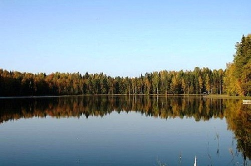
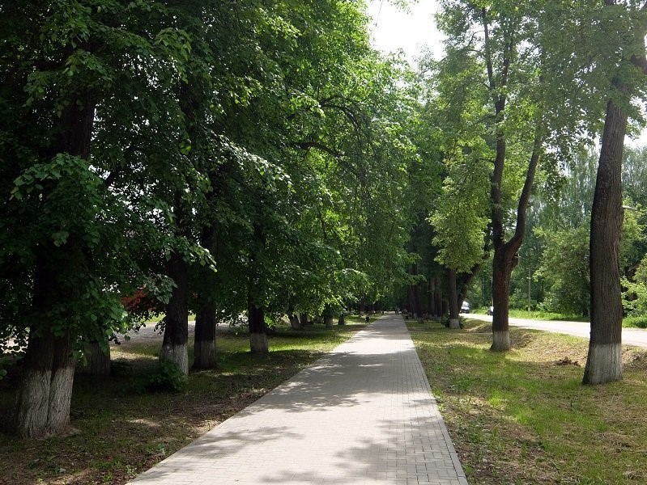
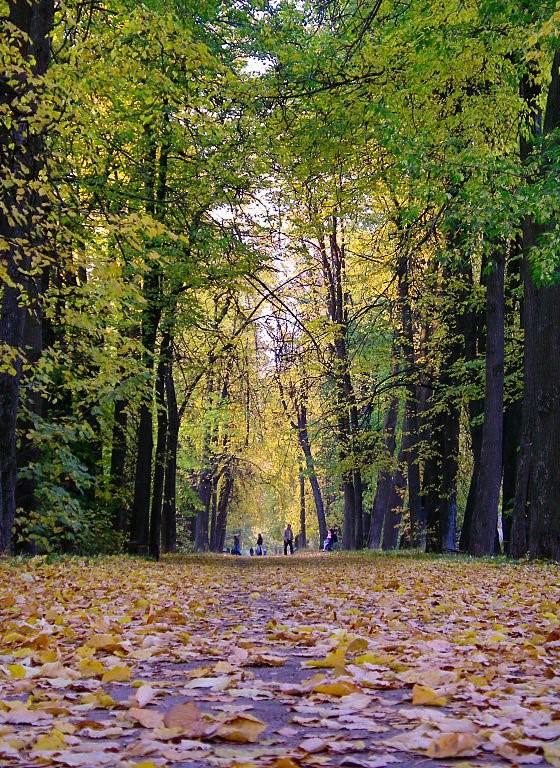

Подлинным достоянием и одним из чудес Бежецкого края является Верестово озеро – государственный памятник природы. Местные жители рассказали очень красивую легенду. Будто нет дна в этом озере. Само оно имеет волшебную силу жемчужины чёрной, если кто найдёт эту жемчужину, озеро станет темнеть, в земле чудотворные родники откроются. Район озера Верестово является уникальным природным комплексом, местом сезонной миграции большого количества различных видов водоплавающих птиц. Это и десятитысячные стаи белолобых и серых гусей, десятки тысяч речных и нырковых уток, которые весной начинают гнездиться на озере Верестово, многочисленные кулики. Здесь можно заметить очень редко встречающихся перелётных видов: тулес, круглоносый плавунчик и средний кроншнеп. Озеро Верестово можно назвать птичьим раем. Здесь прижились две колонии серых цапель, крупнейшая в Европе колония малой чайки, большие колонии турухтана, отмечено гнездование редкой в этих местах вертлявой камышовки. Встречается ряд видов птиц, занесённых в Красную Книгу России: чёрный аист, скопа, орлан-белохвост, филин. В 1980-х годах проводились исследования по экологии водоплавающих птиц. Угодье входит в состав ключевой орнитологической территории международного значения.

Липовая аллея города Бежецка – уникальный памятник природы. По рассказам старожилов, Липовую аллею в XIX веке посадили монахини Благовещенского монастыря на границе городских и уездных земель. Липы в городе улучшают микроклимат городской территории, создают условия для отдыха на открытом воздухе, предохраняют от чрезмерного перегревания почву, стены зданий и тротуары.

Когда-то здесь была большая деревня. Теперь же очертания усадьбы только угадываются – от барского дома остался покрытый мхом и поросший кустами фундамент, рядом – одичавший сад, где гуляли молодые Анна Ахматова и Николай Гумилев. Есть еще дуб – свидетель жизни нескольких поколений Гумилевых. На нем висит памятная табличка, на которой написано: «На этом месте была усадьба Слепнево. С 1911 по 1917 гг. сюда приезжали русские поэты Николай Гумилев и Анна Ахматова».